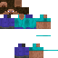
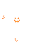
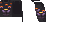
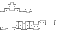
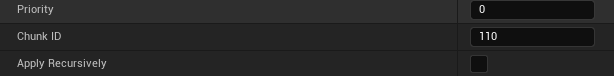

Player Textures
▲

SteveFix / AlexFix
Base texture for Steve and Alex | Replace to change the player's main skin

SteveFixEMS / AlexFixEMS
Emissive map any glowing pixels on the skin

SteveCape / AlexCape
Cape texture applied to the player's cape
Armor Textures
▲
SteveArmorBoots / AlexArmorBoots
Armor texture for the boots layer

SteveArmorChest / AlexArmorChest
Armor texture for the chestplate layer

SteveArmorHelm / AlexArmorHelm
Armor texture for the helmet layer
SteveArmorLeg / AlexArmorLeg
Armor texture for leggings/pants layer
Armor Trims & Overlays
▲

SteveTrimHelm / AlexTrimHelm
Trim overlay texture for the helmet. Overlays on top of base armor to add trim detail.

SteveTrimBoots / AlexTrimBoots
Trim overlay texture for boots. Overlays on top of base armor to add trim detail.

SteveTrimChest / AlexTrimChest
Trim overlay texture for chestplates. Overlays on top of base armor to add trim detail.
SteveTrimLeg / AlexTrimLeg
Trim overlay texture for leggings. Overlays on top of base armor to add trim detail.
Trim Color Palettes
▲
SteveTrimColorBoots / AlexTrimColorBoots
Indexed color palette used to color the boots trim. Replace with palette PNG to change trim colors.

SteveTrimColorChest / AlexTrimColorChest
Indexed color palette used to color the chestplate trim. Replace with palette PNG to change trim colors.

SteveTrimColorHelm / AlexTrimColorHelm
Indexed color palette used to color the helment trim. Replace with palette PNG to change trim colors.

SteveTrimColorLeg / AlexTrimColorLeg
Indexed color palette used to color the leggings trim. Replace with palette PNG to change trim colors.
FAQ
▲

Chunk Files
Please Refer to using this chunk ID's if you make a Public Mod for this Mod it allows things to properly collab together
Steve | Chunk 109
Steve's Cape | Chunk 108
Steve's Helment | Chunk 107
Steve's Chestplate | Chunk 106
Steve's Leggings | Chunk 105
Steve's Boots | Chunk 104
Steve's Helment Trim | Chunk 103
Steve's Chestplate Trim | Chunk 102
Steve's Leggings Trim | Chunk 101
Steve's Boots Trim | Chunk 100
------------
------------
Alex | Chunk 209
Alex's Cape | Chunk 208
Alex's Helment | Chunk 207
Alex's Chestplate | Chunk 206
Alex's Leggings | Chunk 205
Alex's Boots | Chunk 204
Alex's Helment Trim | Chunk 203
Alex's Chestplate Trim | Chunk 202
Alex's Leggings Trim | Chunk 201
Alex's Boots Trim | Chunk 200